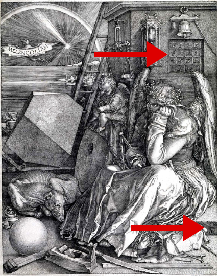

O Símbolo Perdido
Título: O Símbolo Perdido
Resenhista: Wanderson Souza de Farias
O Símbolo Perdido
Escrito pelo mesmo autor de O Código Da Vinci, “Dan Brown é um dos autores de suspense mais popular da atualidade. Seu mega-seller O Código Da Vinci já vendeu mais de 80 milhões de exemplares em todo o mundo. Ele também escreveu Anjos e Demônios, Fortaleza Digital e Ponto de Impacto.” Segundo relato em seu livro.
O Símbolo Perdido contém 489 páginas, além de textos se encontram gravuras de obras de artes enigmáticas, símbolos, pirâmides e quadros matemáticos. Tudo isto está relacionado ao enredo do livro. A trama se baseia na ceita da Franco-maçonaria, mas trás muito em si para o lado de Deus a criação e o poder da mente humana.
O autor pegar como a personagem principal Robert Langdon a mesma personagem principal de O Código Da Vinci, a pesar de a personagem ser o mesmo a aventura vivida por Langdon neste livro é diferente e não se baseia em continuação da outra. Robert Langdon “o celebre professor de Harvard é convidado às presas por seu amigo e mentor Peter Solomon - eminente maçom e filantrópico – a dar uma palestra no Capitolio dos Estados Unidos. Ao chegar lá, descobre que caiu em uma armadilha. Não há palestra nenhuma, Solomon está desaparecido e, ao que tudo indica correndo grande perigo.” A aventura se inicia aí, um sequestrador de nome Mal’ akn que, acredita que os fundadores de Washington, a maioria deles mestres Maçons, esconderam na cidade um tesouro capaz de dar poderes sobre-humanos a quem o encontrasse.”
Robert Langdon vendo que a única forma de tirar o seu amigo das mãos desse sequestrador é cooperando com o mesmo. Ele “se lança numa corrida alucinada pelos principais pontos da capital americana: o Capitólio, a Biblioteca do Congresso, a Catedral Nacional e o Centro de Apoio dos Museus Smithsonian.” Nestes labirintos de verdade ocultas, códigos maçônicos e símbolos escondidos, Langdon conta com a ajuda de Katherine, irmã de Peter e renomada cientista que investia o poder que a mente humana tem de influenciar o mundo físico.”
Em busca de um segredo escondido pelos maçons, o livro se dar por muitos mistérios e enigmas. Um fato curioso e que no início do livro o autor relata que, “Todas as organizações citadas neste romance são reais.”
O livro é incrível, cheio de mistérios. De alguma forma esse livro nos leva a pensar e a ver a vida e a Deus de uma forma poderosa e diferente. Quando o segredo é revelado tudo fica mais claro e belo.
Vale a pena ler este livro! Para deixar tudo mais intrigante eu fiz algumas pesquisas sobre as ceitas, rituais, quadros de artes, símbolos e etc., relatados no livro para ver se aquilo era realmente verdadeiro. Eu obtive respostas e conhecimentos novos, pois realmente há muitos fatos verídicos neste livro. Eu estou deixando esses fatos verdades do livro em uma parte abaixo dessa resenha. Há links de sites com explicações, imagens e fatos que comprovam a veracidade das informações.
Então é para você que está curioso ou curiosa para desvendar os mistérios deste livro e para você que quer saber se o senhor Robert Langdon irá conseguir salvar seu amigo que deixo a recomendação desta magnifica obra.
Frase do livro: “Viver no mundo sem tomar consciência do significado do mundo é como vagar por uma imensa biblioteca sem tocar os livros. “Autor Dan Brown.
Fatos verdadeiros do livro
Ciência noética:
Realmente existe os estudos sobre a ciência noética, e de fato ela estuda o poder que a mente exerce sobre a matéria e ela vai muito além. Abaixo está um vídeo muito bem explicado do que se trata a Ciência noética. E para vocês terem uma ideia da grandiosidade existe até institutos. Estou deixando o link de um deles para vocês abaixo.
Neste link https://www.youtube.com/watch?v=RechfRZ16XE tem o vídeo que explica o que é a ciência noética; este é um excelente vídeo explicativo e muito bem produzido e explicado com fatos interessantíssimos.
IONS: Instituto de ciência noética da California. O link do site é; https://noetic.org/
Tecnologias relatadas no livro:
Spider, eu não conseguir encontrar uma ferramenta para buscar com o nome Spider, mas conseguir encontrar uma que é O CopySpider uma ferramenta freeware para testar documentos sob o crivo de existência de cópias indevidas de outros documentos disponíveis na internet.
Papéis secretos de Isaac Newton:
Sobre os papéis secretos de Isaac Newton, encontrei um arquivo em um site que relata parte desse documento contando sobre um estudo de Newton sobre uma data prevista para o fim do mundo de acordo com o livro de Daniel. O link do site é: https://g1.globo.com/Noticias/Ciencia/0,,MUL54381-5603,00.html
Os documentos foram vendidos no mesmo ano que é relatado no livro 1936 para o país de Israel. Mais detalhes se encontra no site especificado. Também encontrei mais evidencias em um segundo site que dá mais detalhes, o link do site é; http://joseroberto735.blogspot.com/2013/08/os-manuscritos-secretos-de-newton.html
ORDO AB CHAO (A ORDEM VEM DO CAOS):
A frase Ordo Ab Chao está ligada a maçonaria eu encontrei um arquivo completo explicando o que significa está frase, estou deixando o link do site para quem quiser se aprofundar mais sobre o assunto. https://www.freemason.pt/ordo-ab-chao-a-ordem-vem-do-caos/
A fênix de duas cabeças e o grau 33 da maçonaria:

O fato é verídico, em um site da maçonaria eu encontrei toda a explicação sobre o assunto em questão, estou deixando o link do site para os interessados. O link levará direto para a página relacionada ao assunto: https://www.freemason.pt/grau-33-soberano-grande-inspector-geral-reaa/ Deixo claro que é muito interessante o relato do rito do grau 33.
Não haverá esperança para o filho da viúva:
...Filho da viúva é um apelido comumente aplicado aos maçons. Viúva, no caso é a própria Maçonaria, enquanto instituição, já que seu fundador, Hiram Abiff, foi assassinado. Dessa forma, seus filhos, maçons seriam órfãos de pai. Essa, naturalmente, é uma alegoria, e não é a única inspiração dessa... Esta é parte de um artigo completo que encontrei na internet, se você quer ver mais sobre o assunto acesse o site; https://folhadolitoral.com.br/maconaria/por-que-os-ma-ons-s-o-filhos-da-vi-va O link te redirecionará para a página onde você encontrará o artigo completo.
Quadro relatado no livro, de Albrecht Durer Melancolia 1:

Onde se encontra a seta na parte superior da tela está o quadro mágico relatado no livro. A baixo se encontra os símbolos representando o nome do autor do quadro.